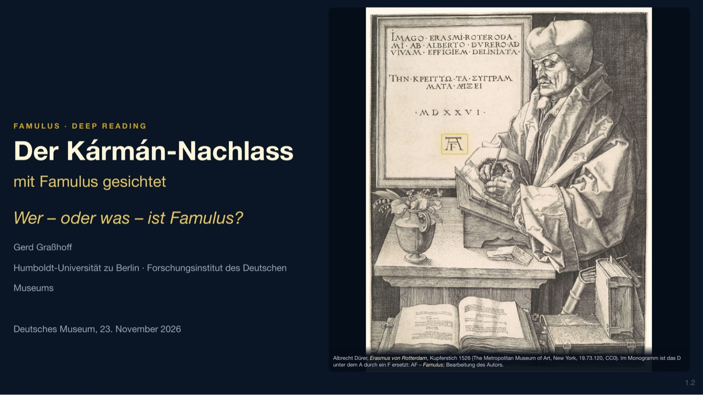
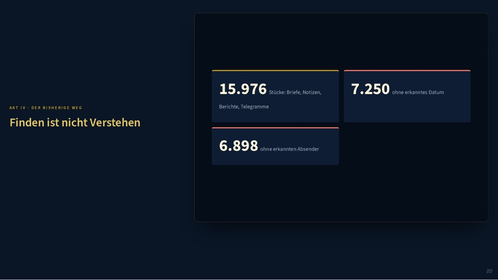

Il fondo Kármán, esaminato con Famulus
Famulus Deep Reading
Famulus Lectures · N. 1
Gerd Graßhoff · Philosophisches Institut, Humboldt-Universität zu Berlin; Forschungsinstitut, Deutsches Museum
Deutsches Museum, Monaco, sala seminari ricerca · 23 novembre 2026 · Conferenza al Deutsches Museum
Versione riveduta della conferenza del 23 novembre 2026, realizzata con Famulus. Traduzione dal tedesco; fa fede la versione tedesca.
Licenza: CC BY-NC-ND 4.0 · Versione 1.0 (Entwurf) · Stato 2026-11-23
Proposta di citazione: Gerd Graßhoff: Il fondo Kármán, esaminato con Famulus. Famulus Deep Reading. Famulus Lectures 1, Deutsches Museum, Monaco, sala seminari ricerca, 23 novembre 2026. https://famulus.lettre.ai/lectures/1/it/
Apertura
Grazie per la possibilità e per la visita mattutina di lunedì. Cercherò di arrivare al punto in modo molto concentrato, quello che voglio riferirvi e sottoporre alla vostra valutazione. Stiamo considerando se possiamo avviare una richiesta di finanziamento per mostrare ciò che presento non solo come una tecnica con effetto sorpresa, ma come uno strumento utile per la ricerca, per il museo e per coloro che vi lavorano. Per questo voglio argomentare oggi. Registrerò l’intervento per presentare uno strumento per conferenze di Famulus: la registrazione verrà trascritta al termine, combinata con le diapositive e pubblicata in modo che i partecipanti possano leggere l’intervento annotato con le diapositive. In questo prototipo oggi non funziona ancora immediatamente.

Fig. 1 · Il fondo Kármán, esaminato con Famulus (Diapositiva 3)
Non mi baso sulla tecnologia più recente, ma sulla grande tradizione della storia della scienza con Erasmus (→ Fig. 1). Mi sono collocato in questa tradizione, e ciò per cui voglio argomentare non voglio nemmeno chiamarlo IA. È anzitutto una questione di terminologia: di cosa parliamo. Non parliamo di agenti come Claude o altri attori personalizzati, ma di qualcosa che voglio chiamare Famulus – sull’esempio dell’uso linguistico del Rinascimento e dell’Umanesimo in Erasmus.
Erasmus usa l’espressione Famulus nelle sue opere. Vediamo qui Dürer in una delle sue inimitabili anticipazioni della terminologia: Erasmus che scrive con la mano destra, nella sinistra tiene qualcosa. Come sempre nelle incisioni di Dürer, la grande questione è che cosa vediamo qui in realtà. A destra scrive evidentemente, a sinistra lo interpreto come un calamaio – ma permettetemi la battuta per portare avanti la metafora: nella mia lettura questo è Famulus. Famulus, tradotto dal latino, è l’aiutante. E sappiamo da molte lettere di Erasmus che il Famulus è l’aiutante, che può essere molto dotto.
Ha una rete di assistenti che lavoravano per lui. In questo lavoro di supporto potevano mettere in campo ogni competenza, tranne una cosa: fornire un proprio giudizio scientifico.

Fig. 2 · Riemann: quattro giorni su tutti i canali (Diapositiva 9)
Riprendendo le attività degli ultimi quattro giorni, cerco qui di riprendere ancora una volta perché in ciò che è accaduto negli ultimi quattro giorni, con il riferimento al teorema di Riemann, quali atti comunicativi si sono svolti negli ultimi quattro giorni nella comunità scientifica (→ Fig. 2). Questo viene monitorato in tempo reale. Ho un monitor scientifico che registra, documenta e analizza tutte le pubblicazioni, tutte le comunicazioni in generale accessibili. Per capire, per vedere come funziona questo processo di creazione scientifica. E qui c’è stato un annuncio, a metà della scorsa settimana, che il teorema di Riemann è dimostrato. Per ora è solo un’affermazione ardita, soprattutto quando si vede che la dimostrazione non è avvenuta in forma matematica convenzionale, ma mediante la consegna di 250000 pagine di codice stampato.

Questo è il primo problema: chi verifica il codice (→ Fig. 3)? È già sapere? Naturalmente no. Ma – e questo è il processo che mostro qui – si svolge un vivace processo di comunicazione scientifica che, da ciò che segue all’annuncio, alla fine produce qualcosa che sono convinto si rivelerà o sapere o un annuncio prematuro con lacune che non si possono più colmare. Come finisce il gioco, non lo sappiamo.
Voglio sfruttare il parallelismo: già in questi dialoghi degli scienziati con l’impiego della tecnica troviamo affermazioni come nel primo annuncio: Sì, ho trovato questa dimostrazione, working with Claude. Chi è Claude? Claude è la tecnologia. Viene personalizzata dalla denominazione dei Tropics – proprio questo voglio evitare, perché suggerisce che qui abbiamo un attore scientifico. Secondo la mia lettura non lo abbiamo.
Lean, il dimostratore, è una tecnica matematica di dimostrazione automatica che viene impiegata qui. Questa tecnica ha elaborato queste 250.000 pagine e ha dimostrato che questa dimostrazione è senza lacune e corretta secondo tutta la comprensione dell’impiego di questa tecnologia da parte della comunità.
Che cos’è Famulus e cosa sa fare?
Prologo

Fig. 4 · La piattaforma Kármán. Il fondo comprende 1.066 cartelle con 38.213 pagine ed è raggiungibile con un clic come piattaforma. (Diapositiva 13)

La mia lettura è questa: ciò che Lean è per la matematica, vorrei introdurre Famulus per la storia della tecnica e della scienza (→ Fig. 4, Fig. 5). È un grande annuncio di lunedì mattina – mi perdoniate, tra amici è il mio tentativo di sporgere un po’ la testa. Per mostrarlo, vorrei collegarlo alla pubblicazione del fondo Kármán, così come l’ho riordinato e preparato. Il fondo che vedete qui è accessibile in questa misura; vi si lavora ancora, cosicché attualmente delle 1066 scatole 328 sono completamente digitalizzate.
Le macchine funzionano tutte in background e dominano la mia pensione. Siamo pur sempre a un terzo, e nelle prossime due settimane saranno presumibilmente digitalizzate tutte le pagine restanti. Qui trovate già una categorizzazione automatica. Vedete che questo fondo comprende circa 204 corrispondenti, cosa che nel repertorio non si vede. I numeri possono ancora cambiare a causa della lavorazione; è provvisorio.
240 carte, 142 manoscritti di Kármán e così via. Brevetti, ma anche temi come turbine, tubulina, funzioni di perito, ponti crollati a causa di fenomeni di vibrazione e simili. Tutto questo è sistematizzato e già suddiviso automaticamente in categorie da Famulus.
Tutto questo è già consultabile e utilizzabile. A sinistra nella pagina web vedete un registro che può essere filtrato per categorie, cioè se si tratta di manoscritti o di corrispondenza; poi sono elencate tutte le corrispondenze, che si possono raggruppare. Al centro si vedrà che si possono aprire i singoli documenti. A sinistra qui impostati i facsimile, cioè tutti i facsimile sono subito visibili. A destra la trascrizione. Essa è in grado di trascrivere in modo OCR anche matematica e testi simili più complicati, anche tutti i testi in lingue straniere.
Si possono copiare per ricavarne latte o altri documenti di pubblicazione. In alto si può navigare, e lo si può fare così rapidamente che sullo schermo è garantita, credo, una buona leggibilità. Qui è la variante edizione facsimile di questa lettera. Poi in questo ambiente si hanno già strumenti di elaborazione. Questa è ora la prospettiva dell’utente, come posso utilizzare l’accesso a questo stato. Avete visto, sono circa 700.000 frasi digitalizzate e identificate singolarmente.
Famulus dunque non è solo in grado di mostrare facsimile in traduzione; l’analisi che ora posso mostrarvi lavora esattamente sulla frase e in modo ancora molto più preciso, compresi gli elementi mediali aggiunti, le denominazioni e altri supporti informativi. Si possono cliccare le frasi. Cliccandole, si seleziona un segmento – così l’ho chiamato nella terminologia – per farci qualcosa. Un effetto collaterale è che si può citare ciascuno di questi segmenti e indicarlo come citazione nelle proprie pubblicazioni; il mezzo di pubblicazione di questa citazione viene allora contrassegnato come link cliccabile, e il punto collegato si mostra all’utente. Si può dunque citare esattamente sulla frase. E non solo: selezionando – ora sono un po’ veloce – si può anche, e questo l’IA, Famulus, deve comunque farlo, interpretare il senso in modo completamente trasparente.

Vale a dire, mostrare la comprensione del testo (→ Fig. 6). Che cosa si dice qui in realtà? Quali sono i presupposti impliciti di questo passo? Tutto questo si vede indicato nella barra di destra. Si può – questo sistema imparerebbe; sulla base di documenti più recenti questa comprensione del testo viene continuamente aggiornata, rielaborata e così anche sempre più validata, corretta e sicura.
Le traduzioni si possono impostare a piacere. Ho configurato le principali lingue europee, ma è traducibile a piacere in tutte le lingue, in 140 o 70 lingue. Si possono anche far tradurre interi passaggi in tempo reale; non si deve conservare nulla. Va così veloce che una traduzione avviene entro pochi secondi.
In pochi clic si possono selezionare anche interi paragrafi. Poi si può chiedere per nomi e ambiti disciplinari e far richiamare le cartelle corrispondenti. Oppure – Famulus crea automaticamente dossier attraverso l’elaborazione di queste fonti.
Li elabora anche con altre opere di riferimento bibliografiche o biografiche, cosicché i dossier diventano sempre più validi, ampi e pertinenti. Qui nella colonna di destra, in una determinata pagina, posso aprire il dossier, come si può intuire qui, e far mostrare un dossier su una persona menzionata qui. Esso contiene tipicamente le tappe biografiche principali, le opere principali e ciò che potrebbe essere particolarmente interessante per il contesto. Si possono anche porre domande, di qualsiasi tipo, su questo punto, su questo testo, ma anche in quello che nel complesso chiamo spazio dell’evidenza – cioè ciò che può entrare in considerazione come evidenza per una risposta. Voglio subito spiegare perché la risposta non è alimentata e validata come in una richiesta a ChatGPT da qualche Wikipedia, ma la validazione qui è una giustificazione della correttezza della risposta fondata in senso stretto sulla teoria della scienza. Questo lo chiamo validazione.
Si possono dunque porre richieste di qualsiasi tipo, qui qualcosa sulla corrispondenza di Prandtl. Lo mostro solo; sono le possibilità che ricevete se Famulus fosse utilizzabile. Avete la comprensione del testo, avete la traduzione, avete i dizionari. I dizionari li ho costruiti a partire da un concetto dell’Oxford English Dictionary combinato con la filosofia del linguaggio del seguire regole di Wittgenstein. Vale a dire, questi dizionari vengono creati da Famulus stesso sulla base dello spazio documentale dell’evidenza, e precisamente nello stile di tutti i luoghi caratteristici rilevanti, con spiegazioni della terminologia nella lingua originale.
Che sia ungherese, latino, greco o inglese, è indifferente. Il dizionario non è solo creato universalmente secondo le migliori procedure della lessicografia linguistica, ma è anche relativo al contesto. Si possono scegliere significati per un determinato periodo. Si possono persino identificare significati per determinati autori e modi di dire relativi. E se nella ricerca lo si vuole davvero in modo rigoroso, si possono anche mettere in luce differenze nell’uso linguistico della terminologia tra due diversi autori della stessa epoca. Questi sono i dizionari.
Le traduzioni sono collegate a essi. Il tutto deve essere così finemente coordinato che le traduzioni utilizzino anche le analisi di comprensione del testo dei dizionari. Questi sono gli strumenti che il ricercatore utente può già utilizzare con un tale fondo d’archivio. Ancora un esempio, per mostrare che non dovrebbe essere tutto qui.
Torniamo a ciò che rende così interessante Lean o l’attuale dibattito su Riemann: il dimostratore partecipa alla comunicazione scientifica, è un partecipante di questa generazione di conoscenza. Così intendo anche Famulus: uno strumento nel senso di Erasmo, senza proprio discernimento e senza licenza per esso. Questo è il ruolo del ricercatore, dello studioso; Famulus è il produttore di ausili.
Nell’esecuzione e nella realizzazione degli ausili lavorano entrambe le mani di Erasmo: il ricercatore che scrive, il produttore del calamaio, che lavora con Famulus.
Ecco, questa è ancora la visualizzazione al riguardo. Ops. Oh, ora purtroppo ho sfogliato male.
Veniamo al fondo. Il fondo consiste ora di 38.000 pagine digitalizzate; l’intero fondo è digitalizzato.
Il lascito è digitale
Atto I

Fig. 7 · Il lascito Kármán – tutto online. 32 pagine estratte a caso mostrano la forma mediale mista del lascito, ciascuna come facsimile, trascrizione, traduzione e spiegazione. (Diapositiva 24)
Come potete vedere qui: una forma mediale mista (→ Fig. 7). Stampa e dattiloscritto, manoscritti, diagrammi – di tutto si trova in un archivio. La qualità dell’OCR in Famulus è così sviluppata che anche lettere ungheresi con ogni sorta di accenti, che io stesso non capisco, possono essere trascritte e ben tradotte. Abbiamo facsimile, trascrizione, traduzione e spiegazione.

Che cos’altro possiamo fare con Famulus (→ Fig. 8)? Per illustrarlo brevemente con questo esempio: qui abbiamo oggetti, senza avere gli originali in casa. Gli originali si trovano a Caltech e sono stati digitalizzati lì in un’ampia azione. Ho potuto acquistare i microfiche dall’Università di Berna, con la possibilità di lavorarci.
Famulus legge insieme
Atto II
Dieci anni fa l’ho digitalizzato completamente; questi facsimile digitali sono alla base e sono stati ora da me rielaborati. Abbiamo appena visto questo fondo Kármán. Ora ci sono questioni di ricerca interessanti.

Fig. 9 · Annotare con prova. Nel dossier i fatti su Hopf vengono annotati con prova, accolti, scartati e corretti; vale il giudizio della ricercatrice. (Diapositiva 29)
Solo alcuni esempi, perché Lei possa intuire di cosa si tratta (→ Fig. 9). Si possono identificare domande dal fondo che continuano a interessare nella ricerca; si può tradurre – abbiamo fatto tutto questo.
Una domanda di ricerca
Atto III

Fig. 10 · Che cosa vide Kármán ad Aquisgrana? (Diapositiva 31)
Possiamo però trovare anche domande interessanti, come in questa lettera a Fromm di Kármán del periodo successivo alla presa del potere nazista (→ Fig. 10). È una lettera di Kármán da Pasadena, 26 novembre 1934, con l’indicazione che era appena stato di nuovo ad Aquisgrana. Come vedete qui – o non vedete, in ogni caso ho provato a evidenziarlo –: che cosa dice Kármán di Aquisgrana, come ha trovato la sua visita ad Aquisgrana?
I was in Aachen this summer and found conditions quite unchanged. [trad.: Sono stato ad Aquisgrana quest’estate e ho trovato le condizioni del tutto invariate.] Dunque, a prima vista sorprendente. 34, è in esilio e trova la situazione o le condizioni invariate. Scrive a Fromm. Poco più avanti scrive, not advisable to express one’s disapproval in a café. [trad.: non consigliabile esprimere il proprio dissenso in un caffè.] Quindi qui entrano un paio di note a piè di pagina, dove la situazione probabilmente non era proprio come prima.

E poi Fromm risponde: «und zwar bin ich wohl nur als Jude entfernt» [trad.: e precisamente sono stato allontanato probabilmente solo in quanto ebreo] (→ Fig. 11). Che cosa intendesse esattamente con ciò è una questione di interpretazione di questo testo, con cui si può importunare Famulus. Se poi si sia soddisfatti della risposta è, in questa fase, innanzitutto un’altra questione. Ma sono le domande di ricerca interessanti che si possono discutere con uno strumento simile – anche solo come Famulus, come assistente ausiliario, se volete. La capacità di giudizio spetta al ricercatore che possiede lo strumento stesso.

Fig. 12 · Chi ha chiesto aiuto a Kármán? (Diapositiva 37)
Dunque: invariato – per chi (→ Fig. 12)? Perché Kármán scrive questo? Chi ha chiesto aiuto a Kármán? Ora vedete possibilità di utilizzo di questo archivio che non si possono più realizzare praticamente a mano: percorrere l’intero archivio. E davanti a questa semplice domanda – chi ha chiesto aiuto a Kármán? – falliscono le normali tecniche di indicizzazione nel trattamento di tali archivi attivi; non si possono rispondere. Qui si possono risolvere direttamente con Kármán, e vedete una cronologia di tutti i documenti in cui un qualche corrispondente chiede aiuto.
Ma poi si va avanti: che cosa poteva fare Kármán? Kármán dice che la sua influenza è molto scarsa; consiglia a Hopf di cercare un’altra fonte. A destra – purtroppo il contrasto non è buono – vedete un diagramma di tutte le scatole contenute nell’archivio e un rimando ai luoghi di reperimento di tutti i corrispondenti che chiedevano aiuto. Vedete che questo si distribuisce su scatole diverse.
Il percorso finora
Atto IV

Fig. 13 · Ogni pezzo classificato. Ogni pezzo è classificato secondo la sua specie: 5.676 lettere, 3.903 note, 3.347 rapporti, inoltre brevetti in 64 cartelle. (Diapositiva 40)
Con un inventario cartaceo in archivio non avete alcuna possibilità di rispondere a una domanda così semplice (→ Fig. 13). Famulus può farlo. Qui si mostra un caso in cui è possibile rispondere a domande di ricerca che, in modo tradizionale, non si possono risolvere solo a causa della dimensione dell’archivio. Ogni singolo pezzo è classificato, e ogni singola frase potete citarla e riutilizzarla in qualsiasi pubblicazione.


Fig. 15 · Millisecondi. La ricerca per lemma di «beurlauben» trova in 8.745.834 parole sei risultati in 0,7 millisecondi. (Diapositiva 42)
Decisiva, perché tutto ciò arrivi comunque a risultati finiti, è la velocità con cui tutto questo accade (→ Fig. 14, Fig. 15). È stata una gran parte su cui ho lavorato per parecchi mesi, per una ricerca per lemma, cioè per la forma base linguistica delle forme grammaticalmente flesse, quindi non solo aiuto, se qualcuno scrive come qualcuno in una lettera chiede aiuto, allora non si può cercare aiuto, ma si devono considerare anche i diversi modi di esprimersi con cui si chiede un aiuto. Questo è ciò che rende possibile questa ricerca, e cioè, come vedete, la ricerca per lemma attraverso l’intero corpus di 700000 frasi mostra sei risultati in 0,7 millisecondi. Questa velocità vi serve, perché possiate poi utilizzare tali velocità per poter percorrere anche i contesti più ampi e poterli elaborare anche in un tempo finito. Dunque le interrogazioni sul dossier relative a una persona e ai suoi retroscena, se richiamate in un intervallo di 1,3 millisecondi.
Famulus ha a disposizione i profili personali di tutte le persone di cui si parla in un testo entro 1,3 millisecondi. Ma trovare non è ancora capire – il passo successivo è la domanda al lascito. Quando avete tutti i riscontri, dovete elaborarli per produrne un risultato comprensivo, corretto e ricco di contenuto, con cui poter continuare a lavorare.
Con Famulus
Atto V


Fig. 17 · Da quattro scatole un fascicolo (Diapositiva 45)
Potete quindi porre domande al lascito (→ Fig. 16, Fig. 17). La ricerca nelle scatole è ampia, come ora possiamo intuire, ma richiede questa velocità per trovare in pochi secondi una raccolta di tutti i luoghi rilevanti. Ogni luogo ha un indirizzo. Questo è importante perché Famulus possa giustificare rivelando tutte le evidenze. Nessuna scatola nera, nulla di nascosto.

Così troviamo risposte in questa corrispondenza, in cui Kármán, a una concreta richiesta di aiuto e sostegno, dice: „Leider muss ich gestehen, dass mein Einfluss sehr gering ist.“ [trad.: Purtroppo devo confessare che la mia influenza è molto scarsa.] In questa lettera si mostra una situazione tipica: Hopf scrive a Kármán, una volta avete scritto a Courant (→ Fig. 18). Per gli addetti ai lavori è un vero consiglio su come ottenere ulteriore aiuto, che Kármán evidentemente non può dare. E nella lettera a Hopf Kármán scrive che dovete trovare un’altra fonte per finanziare la vostra gita – cioè l’esilio.
Lo spazio dell’evidenza si amplia
Atto VI

Fig. 19 · La risposta ha estremità aperte. La cronologia termina in modo aperto: Courant e Heisenberg sono nominati, ma i loro fondi non sono documentati nel lascito. (Diapositiva 51)
Dublin, dicembre 39 (→ Fig. 19). Dunque, queste sono tutte ancora occorrenze del settore Trova qualcosa di rilevante. Ora qui abbiamo qualcosa: se mettiamo insieme tutte queste occorrenze, vediamo che naturalmente anche questo lascito Kármán, l’ho chiamato a mani aperte, appunto questo riferimento a Courant. Courant però non fa parte di questo lascito. Oppure è nominato Heisenberg, ma il carteggio di Heisenberg o tutto ciò che riguarda il suo lascito non è qui compreso.

Fig. 20 · Una rete di fondi. Nodi registrati e firmati collegano fondi estranei, così che ogni sede resti identificabile e citabile in modo decentrato. (Diapositiva 52)
L’idea è costruire una rete Famulus: Famulus Reference (→ Fig. 20). Con essa si collegano i fondi, e tecnicamente l’installazione deve essere così semplice che ogni istituzione interessata, che conserva tali fondi d’archivio, possa registrarsi e iscriversi. È necessaria un’installazione tecnica minima, anche un accesso a Internet, tutto deve essere sicuro, tutto viene calcolato localmente, si rispettano le consuete norme UE. Famulus può allora, con questa velocità, non solo elaborare i fondi locali, ma una rete di tutti i fondi tra loro collegati in modo rilevante. Decentrata, firmata: ogni singola sede, ogni singola frase è identificabile e citabile.
Ci si può fidare della risposta?
Atto VII
Gli errori sono sempre possibili, anche in un Famulus, per quanto buono sia. Non lo si deve sostituire o gettare via subito solo perché si verificano errori – come qui in un OCR, in cui si verifica un errore di riconoscimento e invece di «Zensur» viene riconosciuto «Lessor». Succede, soprattutto nel riconoscimento della scrittura manoscritta. È di gran lunga migliore di Transkribus, molto buono, ma si verificano errori. Famulus consente una curatela del patrimonio, e in modo estremamente efficiente: una volta identificato un errore, lo si può correggere con il controllo di versione ed esso entra nel miglioramento dei patrimoni.

Fig. 21 · Validato sul piano fattuale. Un modello linguistico da solo suona plausibile e leviga le lacune; Famulus fornisce ogni indicazione con indirizzo e segnala le lacune. (Diapositiva 58)
Non approfondisco oltre (→ Fig. 21). Importante è l’aspetto dell’esigenza di Famulus, che lo distingue da tutte le altre offerte di IA – nella mia affermazione in modo piuttosto drastico: i risultati che si ottengono qui sono validati sul piano fattuale.

Vale a dire, la loro correttezza è ricostruibile, verificabile dal ricercatore (→ Fig. 22). E qui siamo di nuovo nell’analogia con Lean. Lean ha ora, è un programma, analogo a Famulus, che ha eseguito il calcolo della dimostrazione dell’ipotesi di Riemann, che nel dettaglio nessuno può ricostruire da sé. E ciò che vedete, ciò che ora sta avvenendo nella comunicazione scientifica, è appunto un allineamento linguistico del linguaggio dell’elaborazione simbolica di Lean, indigesto per l’uomo, a un livello tale che questa dimostrazione viene tradotta in una prova comprensibile per i matematici. E ciò ha già dato primi risultati e proposte dopo cinque giorni. Dunque ora ci sono le 250000 pagine di codice stampato ridotte a 55 pagine di testo dimostrativo scientifico compresso, e questo viene attualmente elaborato dall’intera comunità.
Tipico del fatto che il sapere non è un processo individuale e la conoscenza è un aspetto collaborativo della ricerca globale. Ora veniamo al Deep Reading. Nel volume celebrativo per Lieber Tauch ho introdotto il termine Deep Reading: c’è il Distant Reading, il Close Reading, e ora c’è qualcosa di terzo, e questo lo fa Famulus – il Deep Reading. Le tecniche di IA permettono di interrogare i significati delle espressioni e dei testi scientifici. Non solo la simbolica, non solo la sintassi, le espressioni, i modi di dire, le stringhe, ma i contenuti.
Lo mostro sullo studio delle opere complete di Keplero.
Qui vedete un passo dal capitolo 23, in cui Kepler introduce una frase. Egli ha pubblicato un risultato per un modello astronomico con cui lavora, e stabilisce l’indicazione numerica che una certa grandezza, abbreviata DC, ha il valore 61 148. Non ho ancora visto una pubblicazione a me nota che abbia ricalcolato questo valore. Da dove proviene in realtà? Come ci arriva Kepler? I normali storici della scienza sorvolano su passi simili e dicono che prima o poi qualcuno lo calcolerà. Ora questo non accade più. Ora abbiamo Famulus.
Che cosa fa Famulus? Come con Kármán, ha analizzato l’intero testo fino a ogni singola simbolica e ogni singolo diagramma. Ciò consente indicazioni plausibili. Kepler espone il suo modo di lavorare in modo piuttosto aperto, ma non sempre coerente – un autore estremamente difficile, ma generoso con l’informazione su come fa qualcosa. E in effetti nelle opere complete, capitolo 15, c’è un passo in cui dice di usare qui delle tavole per calcolare.
Solo in termini molto generali, cioè le tavole di Landsbergius, tavole triangolari, quindi se volete tavole sinusoidali e tavole trigonometriche affini. Ebbene, che cosa ha fatto Famulus? Ha caricato automaticamente dall’ETH di Zurigo il facsimile di questa tavola, è stato subito acquisito nel patrimonio, digitalizzato – serve poi anche mezza giornata perché una tavola sia digitalizzata correttamente. Tutte le singole, questa è una pagina di tavola, le tavole devono essere digitalizzate in modo che ogni singola cella di calcolo sia resa correttamente. Dunque le esigenze per l’OCR sono molto alte. E ora il compito è di Famulus: tu sei un Famulus, non devi giudicare, compito semplice, ricalcola i numeri, ha dunque usato questa tavola, queste tavole?
E se sì, come?

Fig. 23 · Il calcolo ricostruito. Il calcolo dà, ricalcolato, 61145, mentre stampato c’è 61148: le ultime due cifre sono state tralasciate. (Diapositiva 71)
Questo compito nessuno l’ha ancora svolto come studioso di Keplero, e a questi mi annovero anch’io (→ Fig. 23). Semplicemente troppo fastidioso, dispendioso, lungo. A Famulus si può affidare il compito. Bisogna cogliere la situazione problematica in questione, convertire una funzione sinusoidale – ciò avviene automaticamente nel Deep Reading –, e poi il calcolo viene eseguito.
E nel frattempo vedete perché sono necessarie le alte velocità. La tabella, ogni singola cella viene moltiplicata come richiede l’uso di queste tavole. E ottenete, ricalcolato, che nella stampa compare 61148, nel ricalcolo 61145. Piccola divergenza ancora, ma già tale che come storico si può esserne soddisfatti. Le ulteriori domande sono già di nuovo interessanti e ricche, perché questa differenza. Ha forse un’altra tavola, un’altra edizione, ha sbagliato i calcoli, cosa che Kepler fa spesso.
Del resto non ha sempre calcolato lui stesso, ma aveva, come Erasmus, alcuni Famuli non altrimenti considerati nella letteratura, che lavoravano per lui, proprio per eseguire i calcoli. Ogni singolo passo viene verificato. La validazione di un risultato permette di interrogare ogni calcolo che il Deep Reading di un testo come l’Astronomia consente: come è giunto passo per passo Kepler a questo risultato? Ogni singolo passo viene esposto. Lo si può usare per generare proprie nuove serie di pubblicazioni. Le ho chiamate Expertise.
Le Expertise ricostruirebbero determinati blocchi di calcolo in un’opera come quella di Keplero, li ricalcolerebbero e li commenterebbero – qui la bipartizione dell’eccentricità sulla base dell’ipotesi vicaria –, come fa anche un buon editore critico di queste opere.
Generato automaticamente. Poi ci sono requisiti per la pubblicazione, che ho riunito in un certificato Famulus: condizioni che questo testo deve soddisfare per corrispondere all’alto requisito di correttezza. Se si ha questo certificato, si ottiene una pubblicazione che non solo chiarisce in modo completamente trasparente la dimostrazione, ma interpreta e mostra anche i mezzi grafici utilizzati, i diagrammi.
Continuare a lavorare nel Notebook
Atto VIII

Fig. 24 · Il modello si muove. La Fig. 4.10 di Kepler viene mossa come modello con 14 oggetti e verificata sullo spazio dei parametri. (Diapositiva 83)
Per capire che cosa avviene realmente nei modelli geometrici utilizzati: tutti questi disegni sono generati da Famulus; non sono disegni tratti da pubblicazioni (→ Fig. 24).

Devo arrivare subito alla conclusione (→ Fig. 25). Dunque? Ciò che Lean è per Riemann, Famulus è per Kepler. E spero di avervi potuto comunicare che, secondo la mia comprensione, è un dimostratore e uno strumento che conduce dimostrazioni per la storia della scienza e della tecnica, così spero, in un tale insieme di opere della storia dell’astronomia.
Ritorno a Kármán
Epilogo

Fig. 26 · Una macchina per questa casa. Kármán scrive il 2 novembre 1923 al Deutsches Museum perché i primissimi motori a olio di Junkers stanno per essere demoliti. (Diapositiva 90)
Ora che siamo al Deutsches Museum, ci si potrebbe chiedere se nel lascito di Kármán ci sia qualcosa in cui il Deutsches Museum sia già menzionato (→ Fig. 26). Con Famulus è una domanda semplice. Tramite il Findbuch questa domanda, credo, non si può rispondere; non l’ho davvero verificato. Famulus trova uno scambio di lettere del 2 novembre 1923, precisamente Kármán al Deutsches Museum. Qui c’era una richiesta di un collega di Vienna su cosa succede ai primissimi motori a olio di Junkers, perché dovevano essere rottamati ad Aquisgrana. Prima generazione, via alla rottamazione.
Poi arrivò la richiesta: sono pur sempre pezzi unici molto importanti, non dovremmo farci qualcosa? La richiesta dice appunto, perché considererei un grande danno nell’interesse generale se gli oggetti estremamente interessanti e istruttivi venissero trasformati in rottame.

Così (→ Fig. 27). Scrittura a ritroso.
Ora devo vedere a chi – ma al Deutsches Museum con la richiesta se non si potessero includere questi oggetti nel patrimonio del museo. In conformità alla Sua proposta ci rivolgeremo direttamente al signor professor Junkers a Dessau con la preghiera di cedergli l’uno o l’altro dei suddetti motori sperimentali. E così avete di nuovo una tale rete di comunicazioni che alla fine portano, suppongo, al fatto che nel patrimonio del Deutsches Museum almeno temporaneamente ci siano stati questi strumenti, queste macchine. La risposta è nell’archivio, ma i margini sono aperti: attende di essere collegata ai fondi archivistici del Deutsches Museum per completare il quadro e aumentare la densità di ricerca così che l’utilità di Famulus in una tale rete si rafforzi ulteriormente. Grazie mille, questo volevo presentarvi.
Discussione
Saluto
Oratore 1: Dunque, siamo stati persone che hanno segnato anche il Jobcenter e dal gennaio dello scorso anno è Senior Scholar qui da noi al Deutsches Museum. E poiché noi, cioè io ho visto ciò che Gerd Kasseckert aveva sviluppato, in realtà anche in direzione di edizioni con IA, progetti con IA in futuro vogliamo fare molto, abbiamo ora dapprima raccolto un circolo di interessati, per presentarlo e discuterlo una volta. E credo che avreste bisogno in qualche modo di un feedback al riguardo.
Oratore 1: Molte grazie per la presentazione chiara e per l’idea di riunire attorno a un tavolo diverse competenze da archivio, biblioteca e istituto di ricerca. Che cosa si può fare sotto il profilo tecnologico, e come lo si potrebbe collegare a progetti come l’esempio dei lasciti Seelenplan, che impiegano i media e questi colori? Qualcosa è stato sviluppato negli ultimi mesi e anni, questioni relative all’indicizzazione, anche nell’indicizzazione di fondi qui nel museo. Ora mi fermo e raccolgo commenti, impressioni e domande.
Gerd Graßhoff: Ho capito bene: dovrebbe essere tutto disponibile in forma digitalizzata, perché si possa applicare Famulus a un convoluto? Ci sono interfacce che nella ricerca sulla velocità consentono qualcosa come una registrazione, così che si sappia che in un catalogo un determinato oggetto si trova da qualche parte, poi si emette un ordine di fotografia o di digitalizzazione e lo si invia al reparto competente; non appena è evaso, l’elaborazione dell’informazione viene ulteriormente processata. Ho la più grande collezione digitale di fondi di meridiane antiche, di 700 siti conservati, inclusa la digitalizzazione 3D di 250 oggetti. È in corso un progetto in Svizzera, ed è in corso una registrazione di ulteriori ritrovamenti di meridiane in Israele, forse 10, 15 oggetti, che poi sarebbero digitalizzati anch’essi, in qualunque forma, e che si possono integrare. Una tale piattaforma di ricerca deve essere molto flessibile e poter accogliere in modo integrativo nuovi fondi. Un tempo discutevamo in interminabili sedute di commissione su norme e standard; oggi non è più necessario. L’IA mette a punto in 5 minuti un sistema di notazione completo sul proprio. L’analisi strutturale dei testi, su cui si è discusso a lungo se dovesse essere TEI versione standard 18 o 19, ci si può risparmiare. Ho introdotto una nuova notazione, FR per Famulus Register, con un codice dietro che identifica tutto in modo univoco, e la si può mappare l’una sull’altra. Spero, nei prossimi giorni, di poter parlare con la collega [nome omesso] di Basilea del lascito dei Bennington. Loro hanno provato per anni manualmente secondo TEI, impegno. Per Famulus è indifferente se la numerazione usi TEI o qualcos’altro; trasformarlo in modo che sia integrabile è 0 impegno. La flessibilità dell’integrità è tale che ciò che un tempo era il primo mal di testa, se lo si potesse applicare del tutto, viene meno. Abbiamo 400 anni di tradizione di registrazione nei nostri cataloghi, non c’è bisogno di ricatalogarla.
Oratore 2: Mi interessa come valutiamo il lascito. La mia domanda: che cosa potrebbe fare il Deutsches Museum, come potrebbe non solo partecipare, ma mettere in campo la sua forza specifica come spazio di sapere integrato, come spazio che non fornisce alla biblioteca solo documenti bidimensionali, ma anche oggetti tridimensionali – di questo non si è ancora parlato –, accanto c’è un laboratorio di digitalizzazione per oggetti, e mobilitare questo valore aggiunto? Sono stato corresponsabile di un grande progetto, tutti i musei di ricerca tedeschi, la piattaforma aperta di informazione sulle collezioni, dove avremmo registrato insieme circa 160 milioni di oggetti nei musei in Germania, dai musei di scienze naturali ai musei d’arte fino ai musei tecnici, per creare questo spazio di sapere. Tali strumenti sarebbero utili; dei 54 milioni di euro che abbiamo richiesto, se ne sarebbe coperta una parte. Come avete pensato a questo, a questa possibilità di integrazione, che cosa significherebbe per le istituzioni del Deutsches Museum poter mobilitare questa forza specifica?
Gerd Graßhoff: La portata di questa collezione è al di là di tutte le possibilità che ho come individuo. Il tutto nasce dall’esperienza che ho fatto con [nome omesso], dove il relatore di [nome omesso] aveva già molti mezzi e proprio questo compito di integrazione. Senza questa tecnologia non era ancora possibile in questa misura, ancora un anno fa non era possibile così. Lo sviluppo di questa tecnologia è rapido; il TEI fu pubblicato a un certo punto come Elements e il bando del ministero federale. Element in sostanza è dapprima solo un Large Language Model, cioè competenza di elaborazione linguistica. Quello che abbiamo visto qui è una componente di elaborazione del sapere, va oltre le singole competenze in un consorzio di una rete attraverso le applicazioni. Questa tecnologia serve con la possibilità di collegamento per andare sulla rete, con tutte le possibilità delle interfacce, trasformazione che avviene ad hoc. Una tale rete ha bisogno per l’utente di una struttura unificante, ma la struttura sottostante può essere distribuita globalmente, attraverso molte istituzioni, e può mantenere la loro infrastruttura, architettura. Non importa se è ampiamente distribuita; l’utente è un computer locale con scarsa competenza di calcolo sul posto e alta velocità di trasmissione via Internet, una topologia di rete non è un problema. Con grandi fondi di oggetti materiali ci sono versioni diverse e sforzi diversamente avanzati su come questi oggetti vengono registrati. Qui in casa abbiamo tre ampie registrazioni 3D. Si ha un 3D-Mesh con cui si può fare qualcosa. Con un gruppo, 20 anni fa, ho digitalizzato il primo e finora unico modello 3D del Pantheon a Roma, dall’esterno e dall’interno, superficie completamente chiusa. Nel frattempo è uno standard IT della formazione architettonica in America. Questo modello viene segmentato nei testi, così che si possa indirizzare ogni singola parte di un tale edificio, per studiarle poi ulteriormente. Ciò avviene in una miscela dei digitalizzati creati localmente, cioè del modello 3D sul posto, con la possibilità di valutarlo, tramite Famulus in un altro luogo. L’elaborazione stessa è distribuita. Così si possono fare i modelli 3D grezzi o l’interpretazione digitalizzata; con le meridiane si può leggere automaticamente la trascrizione, determinare, valutare, si valuta un modello 3D di una meridiana, si valutano le forme delle scale, il tipo, poi si può dire per quale latitudine geografica questo oggetto era fatto. Con informazioni aggiuntive sulla qualità del materiale si hanno tante informazioni che in parte si può identificare il produttore per nome. L’istituzione che fornisce ha per lo più anche il sapere. Il sapere può essere suddiviso in diverse sezioni e contributi, che poi vengono uniti per trovare un’affermazione complessiva su questo oggetto. Il sapere non è una capacità individuale, non la competenza di un individuo come ricercatore, ma per sé collaborativo, collettivo. Questo dovrebbe riflettersi in un tale modello. L’infrastruttura delle istituzioni resta in piedi. Bisogna organizzare una sorta di registratura. In un Deutsches Museum dovrebbe poter sopravvivere una figura guida. Posso solo avviare Famulus, ma non posso gestirlo. Per questo abbiamo bisogno di istituzioni faro come il Deutsches Museum. Presso Kármán ci sono archivi 24 ore su 24, 7 giorni su 7 del lascito a New York, e archivi preliminari, lì molto del lascito è già digitalizzato. Se tutti questi fondi fossero elaborati, l’impegno ora non è più così alto. Un tempo erano domande che arrivavano a 1000000. Ora l’impegno è anch’esso alto, ma fattibile in tempi programmati. Più si aggiunge, più diventa significativo. Non si deve aspettare che un fondo, un archivio da solo metta a disposizione localmente tutte le domande, ma questo deve essere riunito sulla rete. Un tale lavoro preparatorio, che avete fatto, è esattamente ciò che si dovrebbe impostare ora.
Oratore 1: Hai menzionato la parola tempo. Siamo vincolati, sono le 11, l’istituto ha bisogno di un’ulteriore seduta, ma questo è l’inizio di una discussione e non la fine. Ho ancora ricevuto 2 richieste di parola, con brevi domande.
Oratore 3: Come direttore dell’archivio qui del Deutsches Museum sono interessato a questi strumenti. Proprio per quanto riguarda le reti, si potrebbero prendere molti fisici o altri scienziati e non elaborarli. La mia domanda forse riguarda ancora queste fotocamere: che cosa avevate trovato come metadati, quando avete parlato di scatole? Queste unità fisiche sono importanti per digitalizzare le cose, altrimenti sarebbe un enorme guazzabuglio di documenti che forse non si potrebbero valutare. Che cosa avete trovato?
Oratore 4: Sì, è stato molto, molto chiarificatore, molte grazie per questi 2 minuti, è stato fantastico. Forse allora prendo prima una domanda, dunque mi interesserebbe molto sapere quale sia, per così dire, la vostra base tecnica, da quale, quale modello di base LLLLM siete partiti e dove si trova? Dunque, provo molto brevemente, quello sul.
Gerd Graßhoff: Ho trovato la possibilità di elaborazione in scatole, i fondi del libretto. Serve dapprima solo all’ordinamento grossolanamente sistematico. Già solo la riga successiva è poi un manoscritto o 3 testi di base, questo viene predeterminato automaticamente dal sistema. I digitalizzati che ho ricevuto sono in scatole per microfilm, sono ancora presso di me in casa. Li ho fatti digitalizzare a mie spese. Con questi digitalizzati bisogna ancora chiarire diverse questioni giuridiche con il Caltech. Giuridicamente è chiaro che in casa se ne può fare uso, anche citarli e usarli pubblicamente, anche usarli e citarli scientificamente, nel senso classico della citazione. Ciò che va ancora chiarito giuridicamente è se ciò possa essere reso anche al pubblico generale. Questo non l’ho ancora fatto. Tecnicamente uso tutto ciò che è mai stato eseguito; i percorsi di soluzione dei problemi vengono separati in svariati compiti parziali. L’architettura attuale prevede per ogni compito parziale un modello il più possibile buono ma conveniente. Non opera più un modello linguistico da solo; per determinati compiti si prende il più costoso o nemmeno il più costoso, ma perché è il migliore, per altri compiti gli indici. L’obiettivo è che alla fine del prossimo mezzo anno, secondo la mia stima, questi modelli girino essenzialmente in casa. Non c’è vendor lock-in in una tecnologia proprietaria. Se le esigenze sono basse, lo si può fare con un Mac, penso che Mac sia la macchina migliore al momento per la gestione della memoria virtuale, ma si può anche acquistare IBM. Una tale macchina costa al momento 26.000, se la si deve comprare. Con essa si possono elaborare in casa tutti questi processi.
Oratore 1: In conclusione, mi permetto di segnalare che abbiamo quasi tutta la settimana al Deutsches Museum Digital due convegni: l’Energie Community Forum, che inizia mercoledì, e il digitale oggetto giovedì e venerdì, molte occasioni per continuare i colloqui sulla digitalità e la digitalizzazione. Molte grazie di cuore per questa prima serata e a tutti voi un buon inizio.
Su questo manoscritto
I passaggi si basano sulla registrazione; ciascuno riporta a margine il proprio riferimento temporale. Le citazioni dalle diapositive sono riportate nel testo della diapositiva; ciò che non era udibile è indicato come lacuna.
Validazione delle affermazioni. Ogni affermazione del testo è stata verificata quanto al suo fondamento: nel parlato (riferimento temporale), nella diapositiva e, per le indicazioni sulle fonti, nei file di origine della conferenza. Giustificazione, non verifica: un fondamento mancante non è un giudizio sulla verità dell’affermazione. documentato: 35 · solo parlato: 193 · non verificato: 0 · Contraddizione: 0.
- Errori di riconoscimento corretti: «FileMaker» → «Famulus» (register:title; lettura apple «Alphamulus»); «verseh» → «verstehen» (notizen name-famulus); «Erstan» → «Stand» (folie erkenntnis); «Karmann-Nachlasses» → «Kármán-Nachlasses» (register:title; lettura apple «Kan-Nachlasses»); «Karmann» → «Kármán» (folie schau); «Beweisar» → «Beweiser» (notizen riemann; lettura apple «Beweiser»); «Kaltech» → «Caltech» (notizen bibliothek); «Kammer-Nachlass» → «Kármán-Nachlass» (register:title; lettura apple «Karma-Nachlass»); «Kurand» → «Courant» (notizen einfluss); «twenty third, second November» → «2. November 1923» (folie (Datum)); «Inskription» → «Transkription» (folie schau); «Pamulus» → «Famulus» (register:title); «Kalttech» → «Caltech» (notizen bibliothek)
- Riconoscimento incerto (invariato, contrassegnato): Partizipient, Passav, Kuratierung, kollaborativer, zeitgiemig, Ähm, Pinarddrücke, Distributiert, kollaborativ
- Oratori della discussione: 5 voci, determinate da stimmabdruck+inhalt; tutti anonimi tranne il relatore.
- Diapositive senza testo parlato: plattform, dossier, finden, anfrage, vorgang, einfluss, reference, conductor, kepler-notebook, fuer-sie, schluss, danke
- Ciclo di revisione: turno 1: voto 0.50, gate non superato; turno 2: voto 0.51, gate superato; turno 3: voto 0.53, gate superato; turno 4: voto 0.51, gate superato (miglior turno 3).
- Passaggi revisionati: 50; aderenti al testo: 11; citazioni di diapositive alla lettera: 0; lacune: 0.
- Lacuna: 11 passaggio/i in versione aderente al testo (verifica della versione manoscritta non superata o omessa dal modello)
- Lacuna: 12 diapositiva/e senza testo parlato (mostrate o saltate nella presentazione): La piattaforma Kármán, Annotare con prova, Trovare non è capire, Una domanda al fondo, Da quattro scatole un procedimento, «Il mio influsso molto scarso», Decentrato, firmato, citabile, Il direttore d’orchestra, Astronomia nova, illustrata, Cosa significa per Lei, Il fondo è aperto, Grazie
- it: 71 · 12 → 3
Paragrafi con esito aperto della verifica della traduzione (dopo tre cicli di correzione):
- k1b4: Rückübersetzung: Inhaltswörter verloren (33% erhalten)
- k11b3: Rückübersetzung: Inhaltswörter verloren (0% erhalten)
- d6: Zahlen [‘1000000’, ‘20’, ‘24’, ‘3’, ‘3’, ‘3’, ‘3’, ‘3’, ‘3’, ‘7’] ≠ [‘1000000’, ‘20’, ‘24’, ‘24’, ‘3’, ‘3’, ‘3’, ‘3’, ‘3’, ‘3’, ‘7’, ‘7’]
Riscontri aperti (non ancora verificati):
- Met 19.73.120 (Titelfolie, Bildnachweis) — ungeprüft